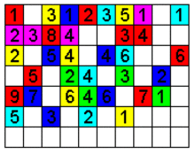

A la hora de comparar diferentes discos duros debemos fijarnos en las siguientes características:
Tiempo de acceso
Es el medio necesario que tarda la cabez del disco en acceder a los datos que necesitamos. Es la suma del tiempo empleado en llevar los cabezales hacia el cilindro adecuado
(tiempo medio de búsqueda) y el tiempo de giro del disco hasta encontrar el sector buscado (latencia).
Velocidad de rotación
Es la velocidad a la que giran los platos del disco duro. Según la anterior definición de tiempo de acceso a mayor velocidad de rotación, menor es el tiempo de acceso. El inconveniente es que también es mayor el calor generado.
La velocidad se mide en revoluciones por minuto (RPM). Las mas usuales son 5400 y 7200.
Buffer
El buffer o caché es una memoria incluida en la controladora del del disco. Si un disco duro está bien desfragmentado, los datos que se van necesitar estarán contiguos. Por ello los discos duros incluyen un buffer en la controladora para almacenar datos que se prevén utilizar, lo que acelera las lecturas si el sistema pide esos datos.
Velocidad de transferencia
Cantidad de datos que puede leer o escribir el disco en la parte mas exterior del mismo en un segundo. Se mide en MB/s.
Tamaño físico.
Es el diámetro de los discos expresados en pulgadas. Los tamaños mas comunes hoy en día son los de 3,5" y los de 2,5".
Capacidad
Cantidad de información que podemos almacenar en el disco duro.
Interfaz
Método utilizado por el disco duro para conectarse al resto del sistema. Las mas comunes son IDE, SCSI, SATA y SAS.